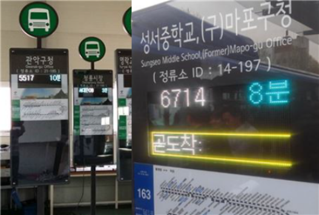

- Name : 정인기
- Birth : 1997. 12. 06
- Address : 서울시 강서구 화곡동
- Phone : 010-9484-6296
- Email : jik4797@naver.com
로딩중
JUNG IN KI
CREATIVE PUBLISHER
끊임없이 노력하는 노력가 웹퍼블리셔 정인기 입니다.
스크롤바를 내리면 작품을 감상할 수 있습니다.
ABOUT ME
VISION
저의 좌우명인 근성으로 승부한다. 노력으로 안되는 것은 없다
노력과 근성으로 웹 퍼블리셔의 임무를 성실하게 수행 할 준비가 되어있습니다.
처음 시작해보는 웹 퍼블리셔의 길
이 길을 저와 함께 걸어보지 않겠습니까?
성실함 없으면 존재자체가 부정되는 정인기 함꼐 하고싶습니다.
WHAT CAN I DO?
시멘틱태그를 사용하여 웹표준을 준수하며
HTML5 & CSS3 시멘틱 페이지를 ZenCoding(EMMET), SCSS로 코딩할 수 있습니다.
책임감과 성실함으로 맡은 임무를 어떻게든 해내는게 저의 최고의 장점 중 하나입니다.
JS 플러그인을 사용에 그치지 않고 필요한 기능을 직접 구현할 수 있는 Javascript/jQuery 로직구현이 가능합니다.
새로운 코딩기법과 디자인을 배우는 것이 정말 즐겁습니다.
- ZenCoding(EMMET) & SCSS
- Javascript & jQuery 로직구현
- MVC 패턴의 페이지 구성
- 반응형 웹디자인
- HTML5 DTD 유효성 검사 통과
- 웹접근성을 향상시킨 시멘틱 페이지
WORK STYLE
- 구조와 디자인, 기능을 분리한 MVC패턴을 구현
- 자바스크립트와 jQuery를 구현
- HTML5 시멘틱과 CSS3 웹페이지를 구현
SKILL
탁월한 UX분석능력과 Emmet/Zencoding 활용
-
HTML/CSS 디자인
시멘틱을 지향하는 HTML/CSS 작성능력 보유,
자바스크립트와 제이쿼리 기반의 로직 구현 가능 -
Javascript/Jquery
자바스크립트와 제이쿼리 기반의 로직구현 가능
-
Sass Preprocessor
SCSS 전처리기능
협업 웹코딩의 필수 기술인 SCSS를 이용한
CSS 스타일링을 원활이 사용할 수 있습니다. -
REACT
리액트 라이브러리 활용
국내 프론트엔드 시장의 대세 리액트 코드구현
ABILITY
젠코딩
HTML5
CSS
jQuery
웹기획
디자인
95%
리더쉽
적극성
창조성
사교성
책임감
정직성
온라인 이력서
‘사용자가 보기 편한 멋있는 웹 사이트를 만들자 ’ 라는 마음으로
항상 노력하고 있습니다.
HTML5 & CSS3 시멘틱 페이지를 ZenCoding(EMMET)으로 코딩할 수 있습니다.
클라이언트의 요구사항을 적극적으로 반영하는 UI/UX 디자인 능력은 저의 최고의
장점중 하나입니다.
JS 플러그인을 사용에 그치지 않고 필요한 기능을 직접 구현할 수 있는 Javascript/jQuery 로직구현이 가능합니다.
새로운 코딩기법을 배우는것과 잘 해결되지 않았던 Javascript 로직을 해결했을때 너무 즐겁습니다
UX DESIGN
작품리스트
이전 다음내가 생각하는 사용자경험 - User Experience
UX의 정의에 대해서 알아보고, 다양한 UX의 사례들, 특히나 성공적인 UX라 불리는 사례들을 보면서
사용자 경험을 바탕으로 어떤 제품이나 서비스를 구축하는 것의 중요성을 깨달았다.
내가 생각하는 UX란, 사용자가 원하는 기능을 사용할 때 사용자가 불편함을 느끼지 않고 사용할 수 있도록 하고,
원하는 활동을 편리하게 제품이나 서비스를 이용하여 할 수 있도록 하는 것이라는 생각이 들었다.
사전적인 의미에서 UX란 사람의 여러 감각과 감정의 총합을 뜻하는데, 내가 생각하는 UX는 ‘불편함’이라는,
혹은 다르게 불릴 수도 있는 부정적인 감정을 최소화시키는 것이라는 생각이 든다.
서울시 버스 도착 알림 서비스

디자인과 UX의 차이
- 1. 와인 코르크 마개
-
와인의 코르크 마개를 작은 다육식물
화분으로 업사이클링(Upcycling)한 사례


- 2. 물티슈 보호 캡
-
오염, 수분증발을 방지하는 물티슈 보호
캡을 콘센트 보호 덮개로 활용한 사례


PORTFOLIO
1. 판타룩스
Fanta looks Design
첫번째 작품인 판타룩스 메인페이지!
다양한 효과가 들어가서 재미있게 한 번 만들어봤습니다
작업프로그램 : Photoshop, Visual Studio Code
100% 개인 작업

2. 당근마켓
CARRAT MARKET Design
두번째 작품인 당근마켓 메인페이지입니다
깔끔한 레이아웃이 마음에들어서 만들어 봤습니다
작업프로그램 : Photoshop, Visual Studio Code
100% 개인 작업

3.LINE
LINE Site Design
세번째 작품인 LINE 메인페이지입니다
깔끔한 원페이지 형식의 LINE페이지로 제작해봤습니다
작업프로그램 : Photoshop, Illustrator, Visual Studio Code
100% 개인 작업

필요한 기능을 직접 javascript/jquery 로직 구현
‘스타일을 창조하여 그것을 섬세한 디자인으로 탈바꿈 시키고싶다’ 는 마음으로 매일 노력하고 있습니다.
HTML5 & CSS3 시멘틱 페이지를 SCSS, ZenCoding(EMMET)으로 작성할 수 있습니다.
클라이언트의 요구사항을 적극적으로 반영하는 UI/UX 디자인 능력은 저의 최고의 장점중 하나입니다.
JS 플러그인을 사용에 그치지 않고 필요한 기능을 직접 구현할 수 있는 Javascript/jQuery 로직구현이 가능합니다.
새로운 코딩기법과 디자인을 배우는 것이 정말 즐겁습니다.
for문과 다중 if문의 결합한 로직 구현
SASS, Emmet 활용
페이지 전체의 계층구조를 입체적으로 분석할 수 있는
실무형 코딩기법 Emmet을 사용할 수 있어 업무시간을 단축시킬 수 있을뿐 아니라,
유지보수도 더욱 쉽고 정확하게 처리할 수 있습니다.
SCSS의 가장 큰 장점인 변수와 Mixin 기능을 적극 활용하여
CSS 스타일링을 할 수 있습니다.
Sprite-Image와 IR(Image Replacement)기법에 능숙
id, class를 남발하지 않고 원하는 요소를 셀렉팅할 수 있는 능력,
CSS3 Transform, Transition, Keyframes을 이용한 애니메이션 효과 구현
직접 구현한 슬라이드
CONTACT
귀사에 입사를 지원합니다.
저의 웹퍼블리싱 이야기 입니다.
질문을 선택하시면 정리된 답변을 보실수 있습니다.
- 1. html5의 가장 큰 특징은 무엇일까요? 화살표
-
답변내용 : 모든 디바이스에서 웹페이지 호환가능 , 시멘틱 웹 기술 지원으로 웹 표준성을 준수 할 수 있습니다.
- 2. 웹표준, 웹접근성, 시멘틱웹에 대해 설명해 주세요. 화살표
-
답변내용 : 검색엔진의 최적화를 위해서 준수해야하는 사항들 입니다.
- 3. 자바스크립트 라이브러리 사용시 가장 큰 장점은? 화살표
-
답변내용 : 일단 편리하고 일의 작업속도, 일의 능률을 대폭 향상시켜줍니다.
- 4. .setInterval() 함수에 대해 설명하시오. 화살표
-
답변내용 : 어떤 코드를 일정한 시간 간격을 두고 반복해서 실행하고 싶을 때 사용합니다.
- 5. CSS 미디어쿼리는 어떤 역할을 수행하는지 답하시오~! 화살표
-
답변내용 : 사이트에 접속하는 장치(스마트폰 기기등)에 따라 특정한 CSS 스타일을 호환 , 적용하도록 도와주는 모듈입니다.
더욱 궁금하신 점은 면접시 말씀드리겠습니다. 감사합니다~!
본 페이지는 저의 개인 포트폴리오용으로 제작되었으며, 상업적인 목적과 관련이 없음을 알려드립니다.